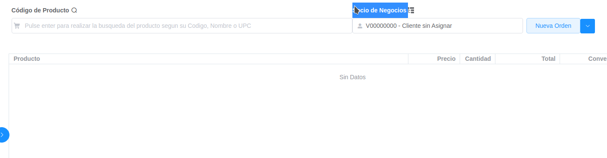

Registro de Pedido
Ubique y seleccione en el menú de ADempiere, la carpeta “Gestión de Ventas”, luego seleccione la carpeta “Orden de Ventas”, por último seleccione la ventana “Punto de Venta”.
Imagen 1. Menú de ADempiere
Podrá visualizar la ventana “Punto de Venta” en ADempiere.
Imagen 2. Ventana Punto de Venta
Seleccione el icono “Nueva Orden”, ubicado en la barra de herramientas superior derecha.
Imagen 3. Icono Registro Nueva Orden
Si desea relacionar su venta a un cliente fiscalmente, puede seleccionar un cliente existente o crear un nuevo cliente:
Para seleccionar cliente existente, proceda a tipear el nombre, RIF o cédula del cliente como lo muetras la Imagen.
Imagen 4. Búsqueda de Cliente
Para seleccionar cliente existente, proceda a tipear el nombre, RIF o cédula del cliente como lo muetras la Imagen.

Imagen 4. Nuevo Cliente
Seleccione la opción “Crear Nuevo Socio de Negocio”.
Imagen 5. Opción Nuevo Cliente
A continuación Seleccione la opción “Crear Nuevo Socio de Negocio”, y se desplegará la siguiente ventana.
Imagen 6. Ventana Crear Socio de Negocio
A continuación indique el código del cliente (Cédula/RIF) en el campo “Código”.
Imagen 7. Código Socio de Negocio
Warning
ADempiere actualiza de modo automático el campo “Número Identificación”, este campo es utilizado para reportes fiscales (Ejemplo:IGTF).
A continuación indique el nombre o razón social del cliente en el campo “Nombre”.
Imagen 7. Nombre Socio de Negocio